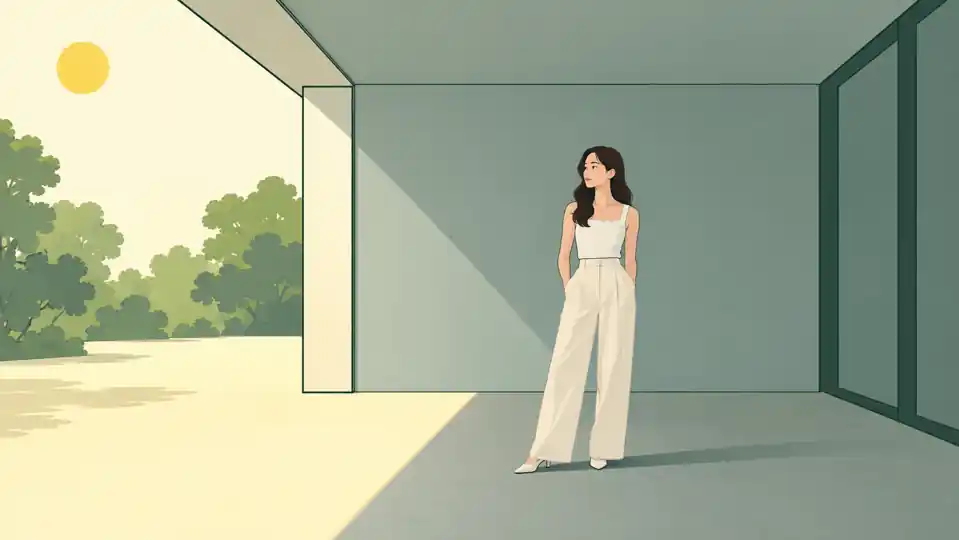
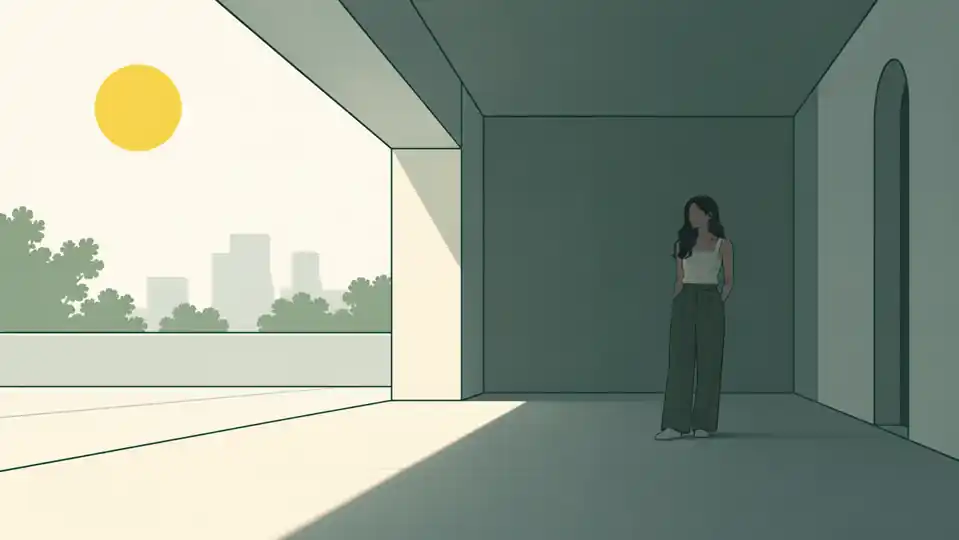
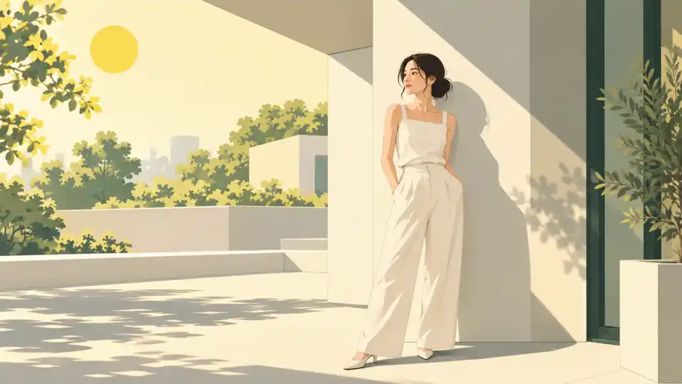
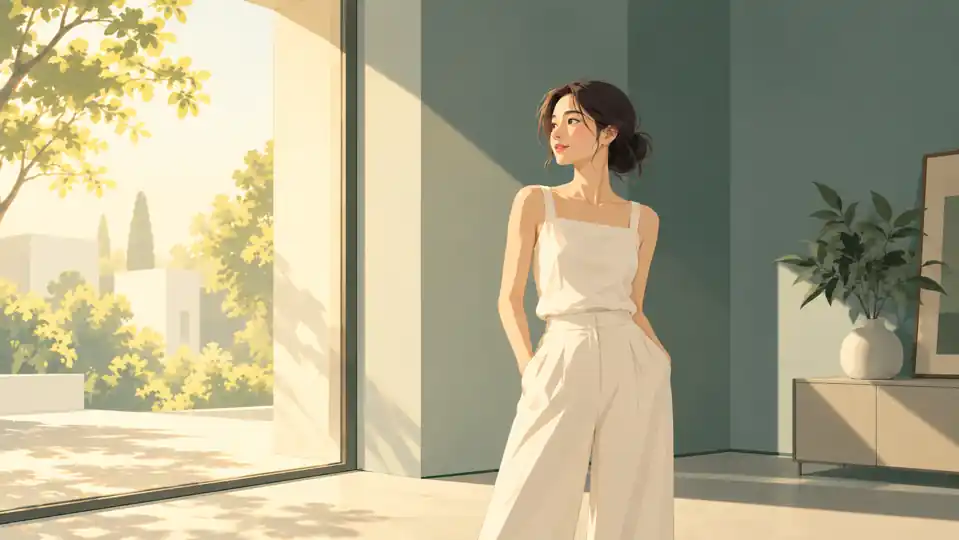

Sát mép bóng râm
Nhiều ánh sáng từ bầu trời hơn; mặt và mắt rõ, ánh sáng vẫn dịu.
Không đứng ở một location rồi cố “chỉnh máy cho đẹp”. Buổi này học cách đi tìm vùng sáng, đặt người mẫu đúng chỗ và dùng chính môi trường như một modifier.
Đưa học viên ra một khu vực có ít nhất 3 loại ánh sáng. Không cho cầm máy ngay trong 3 phút đầu.
Một location tốt không phải nơi có nhiều góc đẹp nhất, mà là nơi cho phép bạn chủ động chọn vùng sáng phù hợp với trang phục và mục tiêu hình ảnh.
Giữ hướng người mẫu. Chụp sát mép shade, lùi sâu khoảng 1m và lùi sâu hơn. So mắt, contrast và background.
Không dạy “shade = đẹp”. Shade quá sâu có thể làm mắt tối và background quá sáng.
Mép bóng râm thường nhận nhiều ánh sáng từ bầu trời hơn. Đi sâu vào trong, ánh sáng giảm và direction có thể yếu dần.
Nhiều ánh sáng từ bầu trời hơn; mặt và mắt rõ, ánh sáng vẫn dịu.

Ánh sáng dịu và dễ kiểm soát; cần so độ sáng của hậu cảnh.

Mắt và da dễ tối, trang phục mất chi tiết; phía ngoài sáng hơn nhiều.
Dùng cửa sổ/cửa ra vào. Giữ người mẫu một vị trí và xoay front → 45° → side. Sau đó thay khoảng cách đến cửa.
Nguồn gần và lớn tương đối thường mềm hơn nhưng falloff nhanh hơn.
Đọc hướng sáng qua bóng trên mặt và trang phục. Quan sát ảnh, sau đó nhìn sơ đồ vị trí tương đối giữa cửa sổ và người mẫu.
Nguồn sáng gần trục nhìn của khuôn mặt. Phần lớn mặt nhận sáng tương đối đều.
Nguồn sáng lệch sang một bên. Bề mặt mặt và trang phục có vùng sáng – tối rõ hơn.
Nguồn sáng gần như vuông góc với hướng nhìn của khuôn mặt.
Giữ người mẫu ở gần cùng một vị trí. Cho người mẫu xoay hướng mặt về phía cửa, rồi chéo 45°, rồi ngang 90°. Quan sát bóng trên má và nếp vải ở từng góc. Sơ đồ thể hiện góc ánh sáng tương đối với hướng mặt, không phải bản vẽ đúng vị trí cửa trong mỗi ảnh.
Không nói “tránh nắng gắt”. Cho học viên thử dùng profile face, quay lưng với nắng và tận dụng shadow hình học.
Highlight trên da, vải trắng và satin trước khi đánh giá mood.
Direct sun có contrast mạnh và cạnh bóng rõ. Thay vì tránh hoàn toàn, học viên cần biết khi nào biến nó thành yếu tố đồ họa.

Cho người mẫu nhìn chếch khỏi nắng; giảm nheo mắt và chủ động đặt bóng.
Ưu tiên: khuôn mặt + trang phục.Tận dụng bóng của tường, cây và kiến trúc làm thành phần bố cục.
Ưu tiên: hình học + nhịp thị giác.Kiểm tra vùng da và vải trắng sáng nhất qua histogram/cảnh báo cháy sáng.
Ưu tiên: thông tin quan trọng.Chụp cùng cảnh backlight với hai ưu tiên exposure khác nhau: một lần ưu tiên người mẫu, một lần ưu tiên background.
Nếu không thể giữ cả hai, thứ gì quan trọng hơn với mục đích ảnh này?
Backlight thường tạo chênh sáng lớn giữa người mẫu và hậu cảnh. Đây là bài học về lựa chọn ưu tiên, không phải tìm một exposure “chuẩn tuyệt đối”.
Da và trang phục dễ đọc hơn nhưng trời hoặc cảnh phía sau có thể quá sáng.
Giữ cảnh phía sau rõ hơn; người mẫu tối đi hoặc thành bóng dáng có chủ đích.
Một nguồn tự nhiên 45°. So không fill → đứng cạnh tường trắng → đứng cạnh mặt tối/tấm đen.
Fill quá mạnh có thể làm mất direction. Không phải cứ sáng shadow là tốt hơn.
Tường, sàn, cửa tối và bề mặt xung quanh có thể hoạt động như reflector hoặc negative fill tự nhiên.
Tường/sàn sáng trả ánh sáng vào chủ thể. Luôn kiểm tra màu bề mặt phản xạ.
Nâng vùng tối có kiểm soát mà không cần một nguồn đèn thứ hai.
Giảm ánh sáng phản xạ phía tối để tăng tương phản và hình khối.
Cho học viên nhìn cả subject và background trước khi đo sáng. Nếu chênh quá lớn, yêu cầu đổi vị trí trước khi đổi settings.
Vấn đề ánh sáng đôi khi được giải quyết bằng 2 bước chân, không phải thêm thiết bị.
Nếu người mẫu đúng sáng nhưng nền phá ảnh, exposure vẫn chưa được giải quyết ở cấp độ hình ảnh.
Trang phục dễ đọc nhưng có thể mất một phần chi tiết ở hậu cảnh sáng.
Giữ vùng trời và phông nền, chấp nhận người mẫu tối hơn theo ý đồ.
Đưa người mẫu cạnh cây xanh hoặc tường màu rồi so với mặt tường trung tính.
RAW giúp chỉnh WB, nhưng color contamination do ánh sáng phản xạ từ bề mặt màu có thể không biến mất sạch chỉ bằng kéo nhiệt độ màu.
Màu của bề mặt xung quanh có thể phản xạ vào da và trang phục. Với fashion, màu vải sai có thể là lỗi quan trọng.
Có thể tạo ám xanh ở vùng tối hoặc mặt dưới cằm.
Dễ thấy trên da sáng và vải trắng.
Bóng râm có thể lạnh hơn vùng nắng trực tiếp.
Dễ giữ màu da và màu trang phục ổn định hơn.
Minh hoạ mô phỏng các xu hướng ám màu; mức độ thực tế tùy bề mặt và điều kiện ánh sáng.
Không đổi outfit. Không dùng flash. Học viên phải tự tìm từng vùng sáng trong cùng location hoặc khu vực nhỏ.
Đặt 6 ảnh cạnh nhau và hỏi “vì sao chọn vị trí này?” trước khi hỏi settings.
Mục tiêu không phải tạo 6 ảnh giống nhau. Mục tiêu là học cách đổi vị trí để ánh sáng phục vụ một ý đồ khác nhau.
Tìm vùng bóng râm còn nhận nhiều ánh sáng từ trời.
Mục tiêu: da và trang phục rõ.
Dùng nguồn lớn có hướng để tạo hình khối.
Mục tiêu: ánh sáng mềm có hướng.Dùng ánh nắng và bóng đổ có chủ đích.
Mục tiêu: tương phản rõ.Chọn ưu tiên giữa người mẫu và hậu cảnh.
Mục tiêu: viền sáng / tách nền.Dùng tường sáng hoặc tấm phản quang để nâng vùng tối.
Mục tiêu: giữ chi tiết vùng tối.Dùng mặt tối/tấm đen để giảm ánh sáng hắt lại.
Mục tiêu: tăng chiều sâu.Đây là flow chuẩn khi ra location. Yêu cầu học viên làm theo thứ tự trước khi bắt đầu shooting.
“Di chuyển người mẫu” phải xuất hiện trước “đổi thông số” khi vấn đề chính là quality/direction của ánh sáng.
Một workflow cố định giúp học viên ít phụ thuộc vào may mắn khi ánh sáng môi trường thay đổi.
Không chỉ nộp ảnh người mẫu. Bài scouting phải có ảnh location không người để chứng minh học viên nhìn được vùng sáng.
Ưu tiên khả năng chọn vị trí và giải thích trade-off hơn retouch.
Không cần location đẹp. Cần location có đủ sự khác biệt để học viên đọc được ánh sáng.
Chụp một location không có người và đánh dấu direct sun, open shade, bounce, negative fill, backlight và background tốt.
Chụp cùng người mẫu ở mép shade, sâu khoảng 1m và sâu hơn. So mắt, contrast và background.
Cùng location, chụp một ảnh direct và một ảnh backlight. Ghi rõ ưu tiên exposure và phần bị mất chi tiết.
Cho học viên chọn một location mới và nói trong 30 giây: đứng đâu, vì sao, background nào, ưu tiên highlight gì.
Buổi 06 sẽ chuyển từ “tận dụng nguồn có sẵn” sang “tự tạo và bố trí nguồn sáng nhân tạo”.
Sau Buổi 05, học viên phải biết di chuyển trong location để tìm quality và direction của ánh sáng trước khi nghĩ đến modifier hoặc flash.
Nhìn location theo light zones thay vì chỉ theo background.
Biết mép shade, cửa sổ, direct sun và backlight khác nhau ra sao.
Biết tận dụng bounce và negative fill từ môi trường.
Biết kiểm tra highlight, background và color contamination.